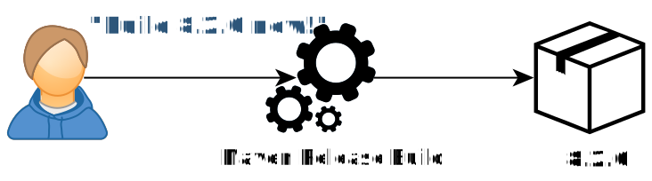
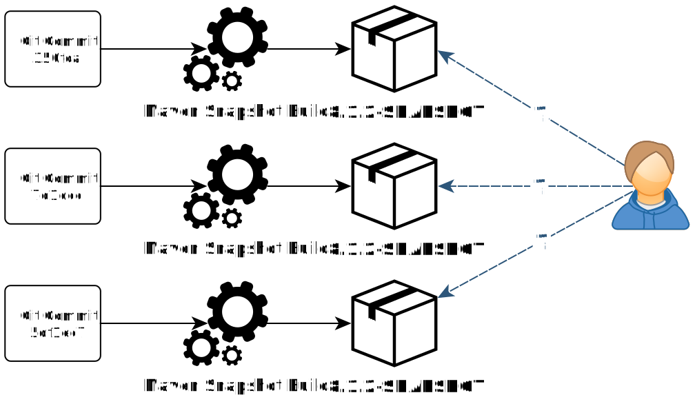
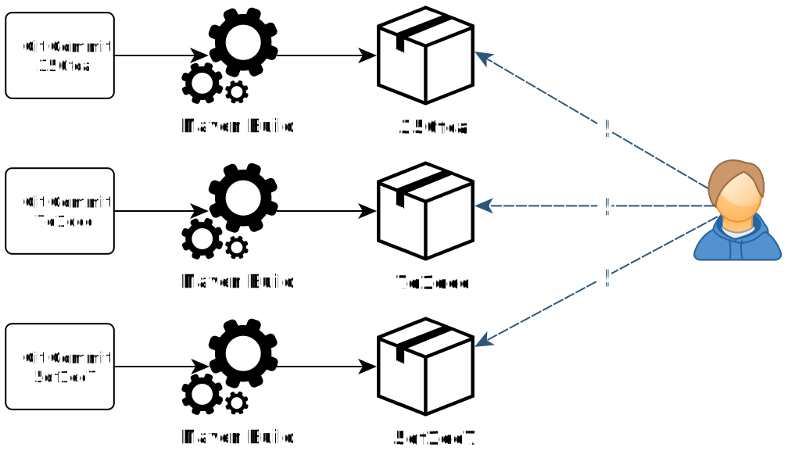
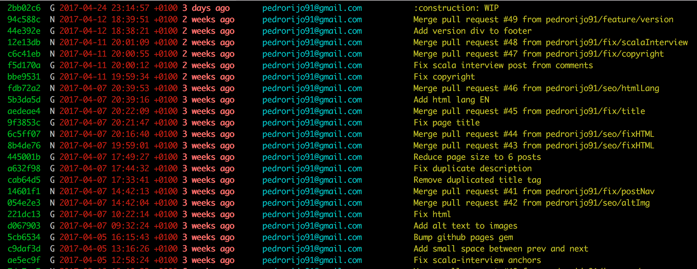
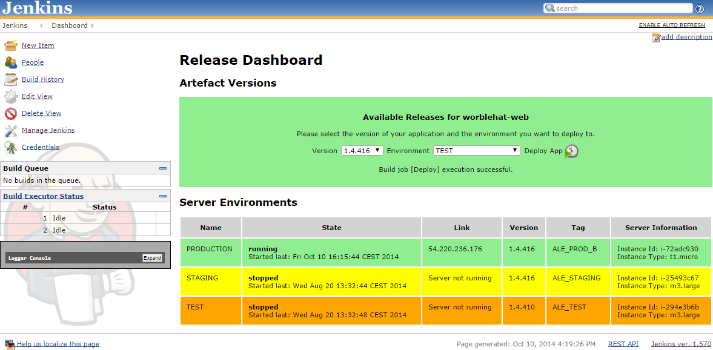

Salidas a Producción
“Hope is not a strategy.”
Cíclo de Lanzamiento

Versionamiento Manual

Versionamiento por SNAPSHOTS

Versionamiento Ágil: Git

Sistema de Administración de Cambios

Visualización de Versión por Ambiente

Apoderamiento
- Permitir al equipo de desarrollo interactuar con el ambiente de producción y los despliegues
- Acceso a logs
- Acceso a Monitoreo
Eliminar Interacción Humana
Blue Green

Canary